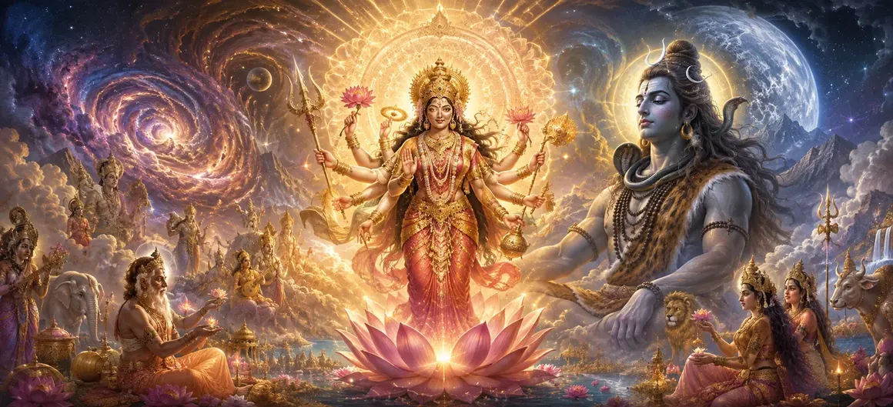

The Manifestation of Divine Shakti
In Chapter 16 of the Vayaviya Samhita, Lord Vayu expounds upon the majestic manifestation of Divine Mother Shakti, detailing her radiant energy, inseparable unity with Supreme Shiva, and her pivotal role in animating the cosmos.
This chapter unveils how kinetic energy and divine will operate to shape universal existence.
Devotees gain profound appreciation for the nurturing and empowering aspect of the Divine Mother.
Chapter 16 Comprehensive Highlights
Radiant Emergence
The majestic and powerful manifestation of Divine Shakti.
Kinetic Power
Understanding the role of Shakti in cosmic activation.
Shiva's Counterpart
Recognizing Shakti as the inseparable power of Supreme Shiva.
Universal Governance
Nurturing and sustaining creation with divine grace.
Motherly Compassion
Granting spiritual solace and liberation to devotees.
Gateway to Creation Narrative
Preparing the narrative for the detailed account of creation.
Core Topics in This Chapter
- 01The Divine Origin of Shakti→
- 02Inseparable Unity with Supreme Shiva→
- 03Kinetic Energy Animating the Cosmos→
- 04Motherly Nurturing of All Realms→
- 05Dispelling Cosmic Inertia→
- 06Empowering Deities and Sages→
- 07Awe and Reverence of Sages→
- 08Spiritual Significance of Divine Motherhood→
- 09Contemplating the Dynamic Energy→
- 10Transition to The Narrative of Creation→
The Divine Origin of Shakti
Lord Vayu explains how Divine Shakti manifests as the supreme power emanating from Lord Shiva to execute universal creation and maintenance.
Her luminous emergence brings dynamic vitality into the structured cosmos.
Inseparable Unity with Supreme Shiva
Shakti and Shiva remain eternally united, representing the dual aspects of a single ultimate reality.
Kinetic Energy Animating the Cosmos
Without Shakti's active force, static consciousness remains unexpressed; together, they set the wheel of creation in motion.
Motherly Nurturing of All Realms
As the Divine Mother, Shakti cares for all living entities with boundless affection and protective grace.
Dispelling Cosmic Inertia
Her vibrant radiance shatters sluggishness and inertia, infusing vitality into every plane of existence.
Empowering Deities and Sages
All celestial beings draw their strength and capability directly from the boundless reservoir of Divine Shakti.
Awe and Reverence of Sages
The assembled sages gaze upon this glorious manifestation with absolute devotion, chanting hymns in Her honor.
Spiritual Significance of Divine Motherhood
Recognizing the Divine as Mother inspires seekers to approach the universe with childlike trust and surrender.
Contemplating the Dynamic Energy
Meditation on Divine Shakti awakens inner spiritual vigor, clearing blockages along the subtle energy channels.
Transition to The Narrative of Creation
Concluding Chapter 16, Lord Vayu prepares the ground to unfold the comprehensive narrative of universal creation.
Extended Key Teachings of Chapter 16
Shakti Emergence
Manifestation of supreme dynamic power.
Kinetic Force
Activating cosmic creation and life.
Shiva's Power
Inseparable union with Supreme Shiva.
Universal Mother
Nurturing all realms with grace.
Spiritual Vigor
Awakening inner energy and devotion.
Creation Narrative
Transitioning to the account of creation.
Expanded Spiritual Reflection
When we meditate upon the glorious manifestation of Divine Shakti, we realize that every breath, every movement, and every heartbeat in the universe is an expression of the Divine Mother's infinite grace and active power.
Living the Message of Chapter 16
Honor the presence of Divine Shakti in all forms of energy, creativity, and nurturing care around you.
Approach life's endeavors with devotion, recognizing that true power stems from divine alignment.
Cultivate unconditional love and compassion for all living beings, reflecting the nature of the Divine Mother.
Detailed Key Spiritual Concepts
The divine manifestation of Shakti.
The kinetic power of action.
The Divine Mother of the universe.
Harmonious union of Shiva and Shakti.
The life-force animating existence.
Surrender to the Divine Mother.
Exhaustive Chapter Summary
Vayaviya Samhita Chapter 16 ('The Manifestation of Divine Shakti') narrates the glorious emergence of Divine Mother Shakti as the inseparable kinetic energy of Supreme Shiva. It details her vital role in animating the cosmos, nurturing all living realms, and empowering celestial beings, while preparing the reader for the comprehensive narrative of creation in the following chapter.
Frequently Asked Questions
1. What is the primary theme of Vayaviya Samhita Chapter 16 ('The Manifestation of Divine Shakti')?
The chapter details the glorious emergence, supreme cosmic energy, and active power of Divine Mother Shakti in harmony with Supreme Shiva.
2. How does Divine Shakti originate in this account?
Divine Shakti manifests as the inseparable dynamic power inherent within Supreme Shiva, animating all cosmic creation.
3. What specific cosmic roles are assigned to Divine Shakti?
Shakti is tasked with driving creation, nurturing all living beings, sustaining universal order, and granting liberation to devotees.
4. What relationship does Divine Shakti share with Supreme Shiva?
Shakti shares an absolute non-dual identity with Shiva, representing the active kinetic energy of static pure consciousness.
5. Why is the study of Divine Shakti's manifestation important for spiritual seekers?
It helps seekers recognize that all activity, power, and grace in the universe flow directly from the Divine Mother.
6. What is the next chapter for navigation after this chapter?
The next chapter for navigation is 'The Narrative of Creation'.
“Divine Shakti is the kinetic breath of the cosmos, empowering creation and guiding souls back to Supreme Shiva.”
Continue Through Vayaviya Samhita
Chapter 16 concludes. Continue to the next chapter, The Narrative of Creation.